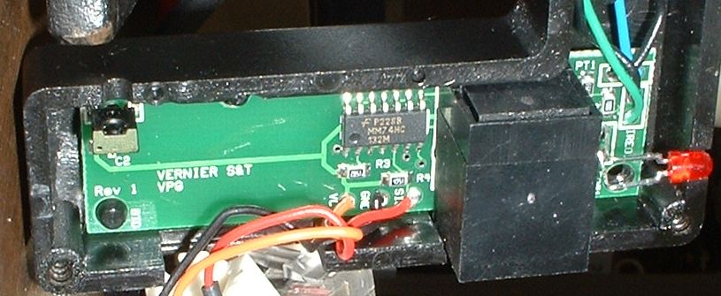

| Of the four types of photogates we have at the Richmond Campus the
newer Vernier is by far the fastest. I do not have a circuit diagram so
I opened one up to see what is inside. The circuit board has a 74HC132
which is a high speed CMOS quad 2 input nand schmitt trigger in a surface
mount small outline package.
The datasheet for the 74HC132 can be found here <pdf>. In my opinion this is a far better device to use in a photogate than the 555 timer IC. 
|